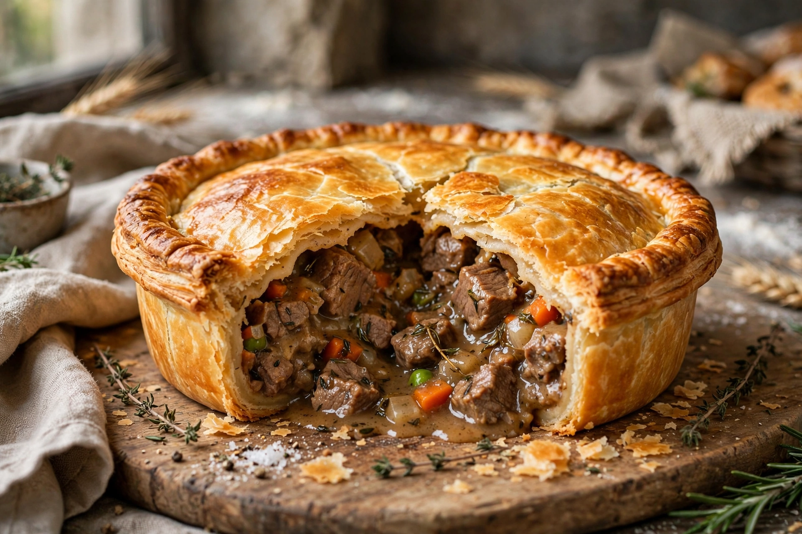

A meat pie is a pie with a filling of meat and often other savoury ingredients, enclosed in pastry. They are found in cuisines worldwide, from the British pork pie to the Australian meat pie and the French-Canadian tourtière.

| Meat pie | |
|---|---|
| Type | Savoury pie |
| Main ingredients | Pastry, meat, gravy |
Meat pies date to ancient Egypt and Rome, where pastry served as a cooking container. In medieval Europe — see Medieval cuisine — elaborate pies were banquet centrepieces.
Britain has steak and kidney pie and the Melton Mowbray pork pie; Australia and New Zealand treat the hand-sized meat pie as an iconic snack; the United States has pot pies; West Africa has a fried meat pie similar to an empanada.